这一节为什么这样简化
本节不追求把所有 CUDA 优化一次讲完，只围绕 A/B/C 三条线：A 改 read/write 组织，B 降低 Q，C 提高 W。float2/float4、alignment、float3、PTX、NCU、half、half2 都要挂回这三条线。
PPT 故事线
- 先复用第三节的 memory-bound 诊断，并把优化拆成 A/B/C。
- 进入假设 A：从标量访问到向量化访存，说明 type、byte、alignment 和尾巴处理。
- 用实验、memory transaction、coalescing、float3、PTX、NCU 解释为什么结论不能只看类型名。
- 进入假设 B：用 half 降低数据量，同时说明数值边界。
- 最后讲 half2 和
__hadd2，把 packed half arithmetic 与 float4 区分开。
附加课堂文件
show-float.html
建议在 Slide 13 作为 type interpretation 预告短暂打开，在 Slide 28 和 Slide 38 重点使用；Slide 16/17 只把它当作单组 size 和单线程读取一组分量的辅助，不替代 PPT 上的 160B 分组和多线程映射图。操作时先选 float1/float2/float4 并点击“执行硬件读取”，让学生看占用空间、对齐要求、LDG.32/64/128 示意和分量进入寄存器；讲 float3 或错位地址时，把数据类型切到 float3，或者把地址偏移调到 4/8/12 这类非对齐位置，再点击执行。
这个文件是课堂解释用的可视化演示，不是真实 GPU 硬件时序模拟。它用简化规则说明 size、alignment、指令拆分和 Global Memory 到 Registers 的移动，不用于得出实际性能数字。
逐页讲课大纲
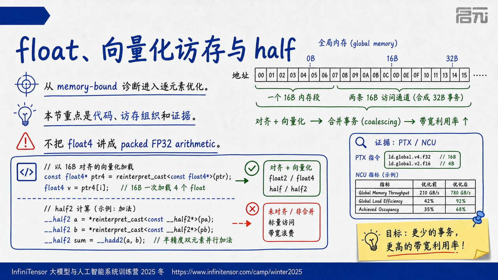
P01 · float、向量化访存与 half
从诊断到 A/B/C
P01 · float、向量化访存与 half
可以先说：“这一页先把‘float、向量化访存与 half’讲清楚，后面的内容都从这个判断接出去。” 这一页要讲清楚：从 memory-bound 诊断进入逐元素优化。；本节重点是代码、访存组织和证据。；不把 float4 讲成 packed FP32 arithmetic。。
讲的时候按这条线推进：每个后续概念都要挂回 A 改怎么拿、B 改拿多大、C 改拿完做多少。 这里会碰到的概念有 memory-bound / compute-bound, float2 / float4, half / FP16。
讲画面时，画面承担的作用：技术训练营封面，memory lanes + code motif。。 不要让学生只看装饰，要指着图、代码或表格说明它在支撑哪一个判断。
这里要收住边界：float4 主要是访存组织和分量视图，不是 packed FP32 arithmetic。 收尾时可以说：“这页先解决到这里，下一页我们把问题接到第三课留下的问题。”
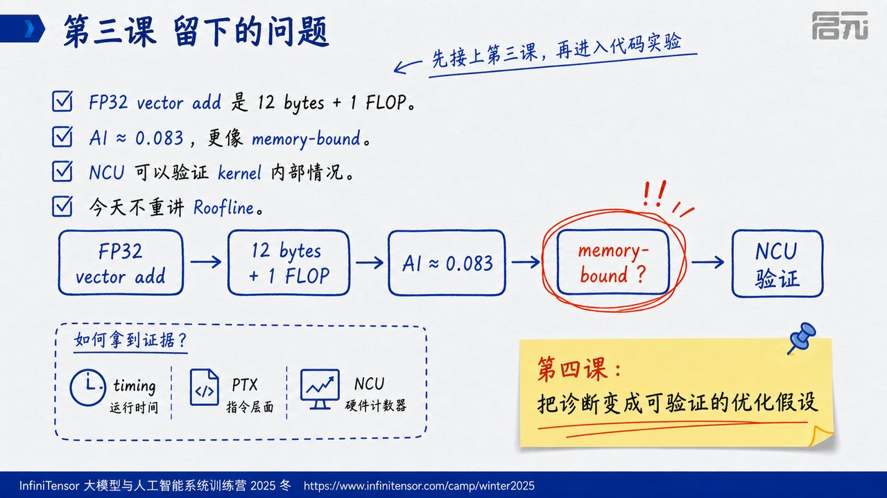
P02 · 第三课留下的问题
从诊断到 A/B/C
P02 · 第三课留下的问题
可以先问学生：“看到‘第三课留下的问题’，你们觉得真正卡住我们的是什么？” 这一页要讲清楚：FP32 vector add 是 12 bytes + 1 FLOP。；AI ≈ 0.083，更像 memory-bound。；NCU 可以验证 kernel 内部情况。；今天不重讲 Roofline。。
讲的时候按这条线推进：每个后续概念都要挂回 A 改怎么拿、B 改拿多大、C 改拿完做多少。 这里会碰到的概念有 kernel, NCU, byte / FLOP, Arithmetic Intensity, Roofline。
讲画面时，画面承担的作用：compact diagnostic chain.。 不要让学生只看装饰，要指着图、代码或表格说明它在支撑哪一个判断。
这里要收住边界：NCU 在这里是验证入口，不展开成完整工具课。 收尾时可以说：“这页先解决到这里，下一页我们把问题接到第四课的角色。”
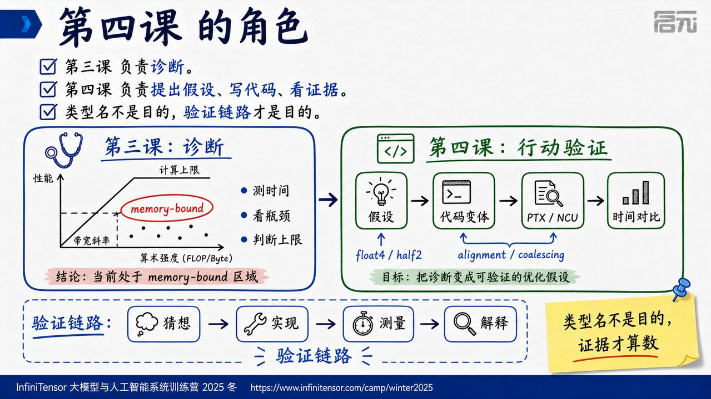
P03 · 第四课的角色
从诊断到 A/B/C
P03 · 第四课的角色
可以先说：“这一页先把‘第四课的角色’讲清楚，后面的内容都从这个判断接出去。” 这一页要讲清楚：第三课 负责诊断。；第四课 负责提出假设、写代码、看证据。；类型名不是目的，验证链路才是目的。。
讲的时候按这条线推进：每个后续概念都要挂回 A 改怎么拿、B 改拿多大、C 改拿完做多少。 这里不需要额外展开新术语，重点是把页面角色讲清楚。
讲画面时，画面承担的作用：diagnosis vs action split.。 不要让学生只看装饰，要指着图、代码或表格说明它在支撑哪一个判断。
这里要收住边界：今天不重讲 Roofline，也不把优化说成固定配方。 收尾时可以说：“这页先解决到这里，下一页我们把问题接到三条优化假设。”
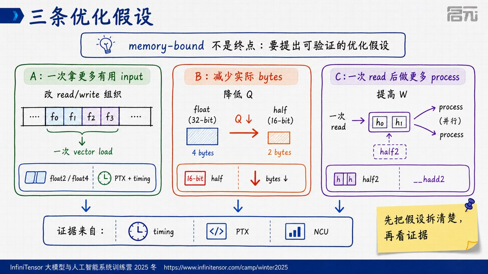
P04 · 三条优化假设
从诊断到 A/B/C
P04 · 三条优化假设
可以先说：“这一页先把‘三条优化假设’讲清楚，后面的内容都从这个判断接出去。” 这一页要讲清楚：A：一次拿更多有用 input，改 read/write 组织。；B：减少实际 bytes，降低 Q。；C：一次 read 后做更多 process，提高 W。。
讲的时候按这条线推进：每个后续概念都要挂回 A 改怎么拿、B 改拿多大、C 改拿完做多少。 这里会碰到的概念有 byte / FLOP。
讲画面时，画面承担的作用：three-column framework.。 不要让学生只看装饰，要指着图、代码或表格说明它在支撑哪一个判断。
这里要收住边界：今天不重讲 Roofline，也不把优化说成固定配方。 收尾时可以说：“这页先解决到这里，下一页我们把问题接到A/B/C 都围绕 read。”
P05 · A/B/C 都围绕 read
从诊断到 A/B/C
P05 · A/B/C 都围绕 read
可以先说：“这一页先把‘A/B/C 都围绕 read’讲清楚，后面的内容都从这个判断接出去。” 这一页要讲清楚：A 改“怎么拿”。；B 改“拿多大”。；C 改“拿完做多少事”。；后续所有内容都挂回这三条。。
讲的时候按这条线推进：每个后续概念都要挂回 A 改怎么拿、B 改拿多大、C 改拿完做多少。 这里不需要额外展开新术语，重点是把页面角色讲清楚。
讲画面时，画面承担的作用：read path with three intervention points.。 不要让学生只看装饰，要指着图、代码或表格说明它在支撑哪一个判断。
这里要收住边界：今天不重讲 Roofline，也不把优化说成固定配方。 收尾时可以说：“这页先解决到这里，下一页我们把问题接到先进入假设 A。”
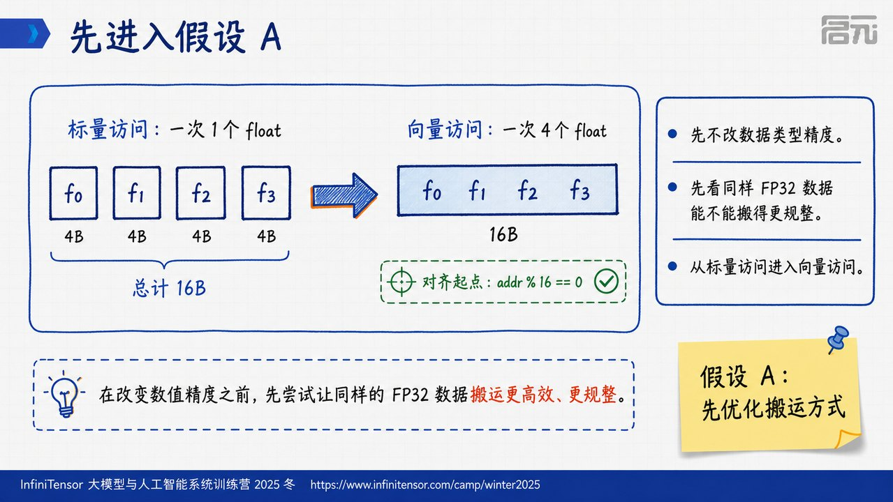
P06 · 先进入假设 A
向量访问前的 byte 视角
P06 · 先进入假设 A
可以先说：“这一页先把‘先进入假设 A’讲清楚，后面的内容都从这个判断接出去。” 这一页要讲清楚：先不改数据类型精度。；先看同样 FP32 数据能不能搬得更规整。；从标量访问进入向量访问。。
讲的时候按这条线推进：讲 float4 前先讲同一段 bytes 可以被不同 type 解释。 这里不需要额外展开新术语，重点是把页面角色讲清楚。
讲画面时，画面承担的作用：section divider.。 不要让学生只看装饰，要指着图、代码或表格说明它在支撑哪一个判断。
这里要收住边界：不是把 Host 数据重新拷贝成 float4；物理内存仍是一段连续 bytes。 收尾时可以说：“这页先解决到这里，下一页我们把问题接到正常写法：标量访问。”
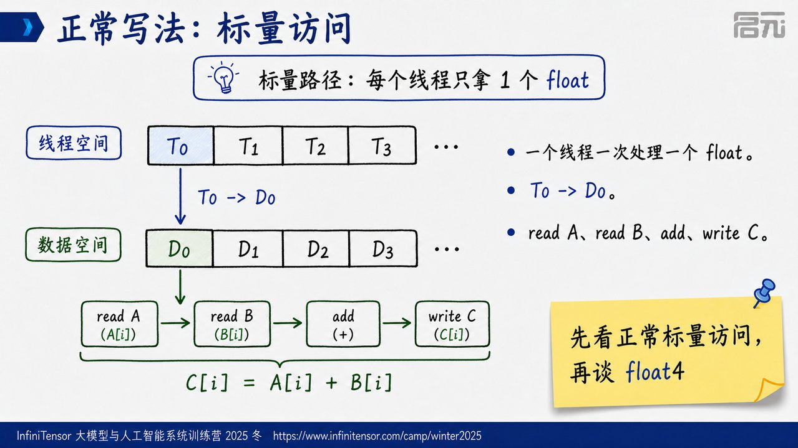
P07 · 正常写法：标量访问
向量访问前的 byte 视角
P07 · 正常写法：标量访问
可以先说：“这一页先把‘正常写法：标量访问’讲清楚，后面的内容都从这个判断接出去。” 这一页要讲清楚：一个线程一次处理一个 float。；T0 -> D0。；read A、read B、add、write C。。
讲的时候按这条线推进：讲 float4 前先讲同一段 bytes 可以被不同 type 解释。 这里会碰到的概念有 线程。
讲画面时，画面承担的作用：thread-to-single-data diagram.。 不要让学生只看装饰，要指着图、代码或表格说明它在支撑哪一个判断。
这里要收住边界：不是把 Host 数据重新拷贝成 float4；物理内存仍是一段连续 bytes。 收尾时可以说：“这页先解决到这里，下一页我们把问题接到向量访问是什么。”
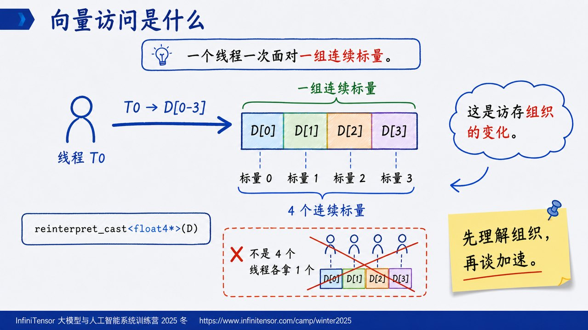
P08 · 向量访问是什么
向量访问前的 byte 视角
P08 · 向量访问是什么
可以先说：“这一页先把‘向量访问是什么’讲清楚，后面的内容都从这个判断接出去。” 这一页要讲清楚：一个线程一次面对一组连续标量。；T0 -> D[0-3]。；这是访存组织的变化。。
讲的时候按这条线推进：讲 float4 前先讲同一段 bytes 可以被不同 type 解释。 这里会碰到的概念有 线程。
讲画面时，画面承担的作用：thread-to-lane group diagram.。 不要让学生只看装饰，要指着图、代码或表格说明它在支撑哪一个判断。
这里要收住边界：不是把 Host 数据重新拷贝成 float4；物理内存仍是一段连续 bytes。 收尾时可以说：“这页先解决到这里，下一页我们把问题接到用 SIMT 接 SIMD。”
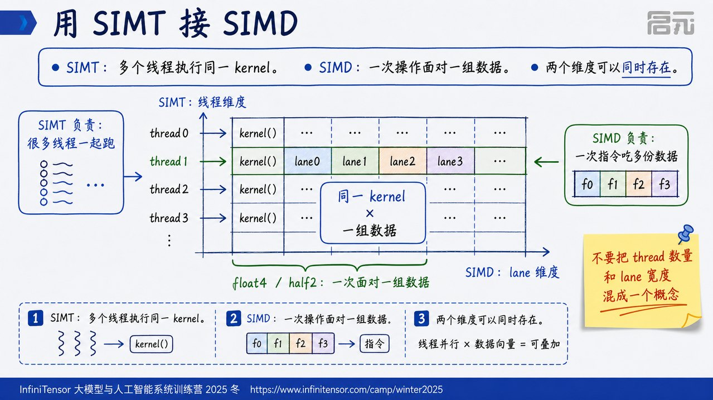
P09 · 用 SIMT 接 SIMD
向量访问前的 byte 视角
P09 · 用 SIMT 接 SIMD
可以先说：“这一页先把‘用 SIMT 接 SIMD’讲清楚，后面的内容都从这个判断接出去。” 这一页要讲清楚：SIMT：多个线程执行同一 kernel。；SIMD：一次操作面对一组数据。；两个维度可以同时存在。。
讲的时候按这条线推进：讲 float4 前先讲同一段 bytes 可以被不同 type 解释。 这里会碰到的概念有 线程, kernel。
讲画面时，画面承担的作用：2D comparison of thread dimension and data-lane dimension.。 不要让学生只看装饰，要指着图、代码或表格说明它在支撑哪一个判断。
这里要收住边界：不是把 Host 数据重新拷贝成 float4；物理内存仍是一段连续 bytes。 收尾时可以说：“这页先解决到这里，下一页我们把问题接到一组连续标量到底在哪里。”
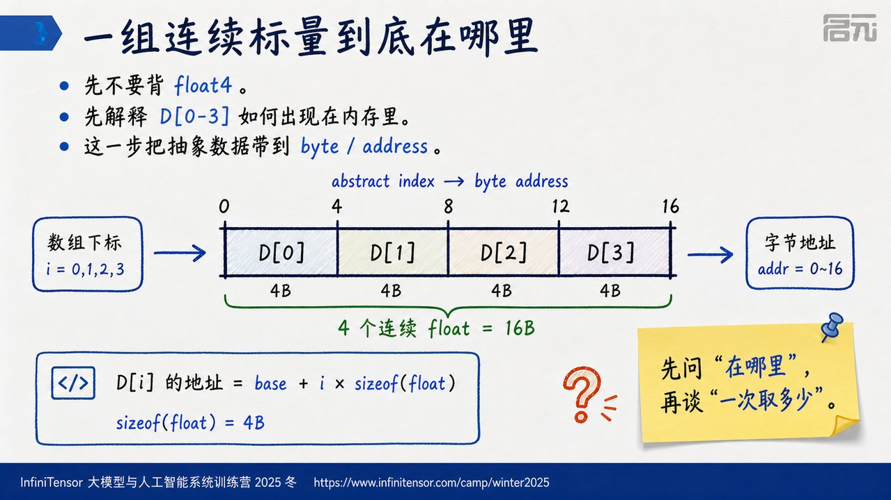
P10 · 一组连续标量到底在哪里
向量访问前的 byte 视角
P10 · 一组连续标量到底在哪里
可以先说：“这一页先把‘一组连续标量到底在哪里’讲清楚，后面的内容都从这个判断接出去。” 这一页要讲清楚：先不要背 float4。；先解释 D[0-3] 如何出现在内存里。；这一步把抽象数据带到 byte/address。。
讲的时候按这条线推进：讲 float4 前先讲同一段 bytes 可以被不同 type 解释。 这里会碰到的概念有 byte / FLOP, float2 / float4。
讲画面时，画面承担的作用：question bridge.。 不要让学生只看装饰，要指着图、代码或表格说明它在支撑哪一个判断。
这里要收住边界：float4 主要是访存组织和分量视图，不是 packed FP32 arithmetic。 收尾时可以说：“这页先解决到这里，下一页我们把问题接到抽象数据摊平成序列。”
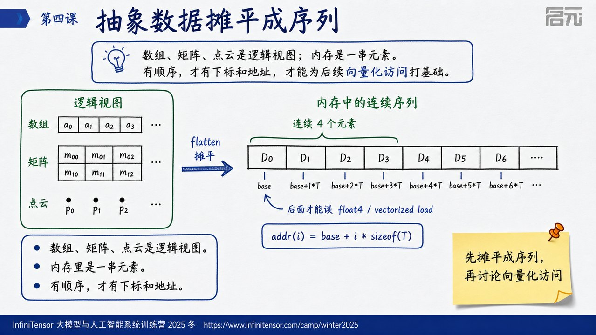
P11 · 抽象数据摊平成序列
向量访问前的 byte 视角
P11 · 抽象数据摊平成序列
可以先说：“这一页先把‘抽象数据摊平成序列’讲清楚，后面的内容都从这个判断接出去。” 这一页要讲清楚：数组、矩阵、点云是逻辑视图。；内存里是一串元素。；有顺序，才有下标和地址。。
讲的时候按这条线推进：讲 float4 前先讲同一段 bytes 可以被不同 type 解释。 这里不需要额外展开新术语，重点是把页面角色讲清楚。
讲画面时，画面承担的作用：shapes flatten to D0 D1 D2 sequence.。 不要让学生只看装饰，要指着图、代码或表格说明它在支撑哪一个判断。
这里要收住边界：不是把 Host 数据重新拷贝成 float4；物理内存仍是一段连续 bytes。 收尾时可以说：“这页先解决到这里，下一页我们把问题接到序列落到 byte/address。”
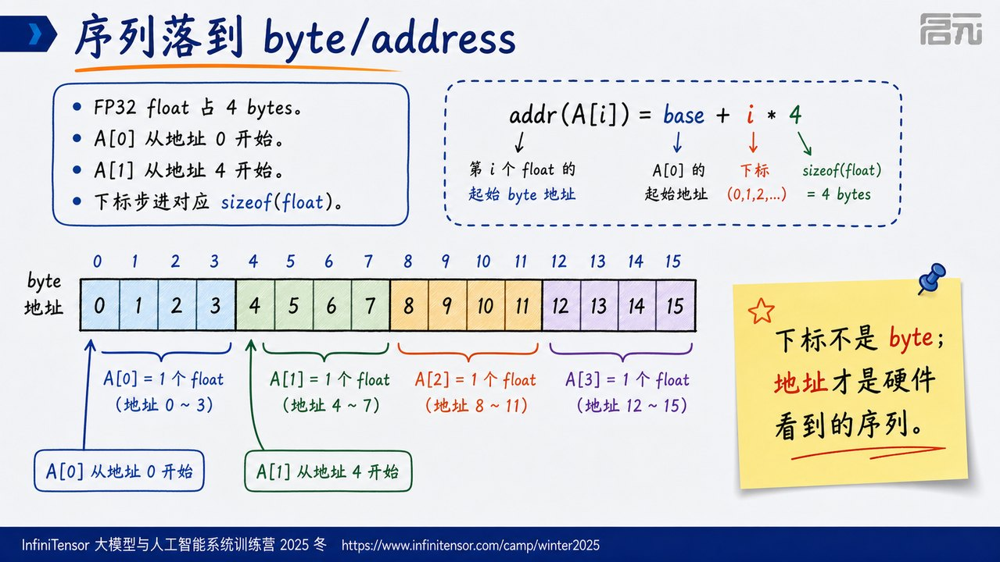
P12 · 序列落到 byte/address
向量访问前的 byte 视角
P12 · 序列落到 byte/address
可以先说：“这一页先把‘序列落到 byte/address’讲清楚，后面的内容都从这个判断接出去。” 这一页要讲清楚：FP32 float 占 4 bytes。；A[0] 从地址 0 开始。；A[1] 从地址 4 开始。；下标步进对应 sizeof(float)。。
讲的时候按这条线推进：讲 float4 前先讲同一段 bytes 可以被不同 type 解释。 这里会碰到的概念有 byte / FLOP。
讲画面时，画面承担的作用：byte grid with 4-byte cells.。 不要让学生只看装饰，要指着图、代码或表格说明它在支撑哪一个判断。
这里要收住边界：不是把 Host 数据重新拷贝成 float4；物理内存仍是一段连续 bytes。 收尾时可以说：“这页先解决到这里，下一页我们把问题接到type 决定如何解释 bytes。”
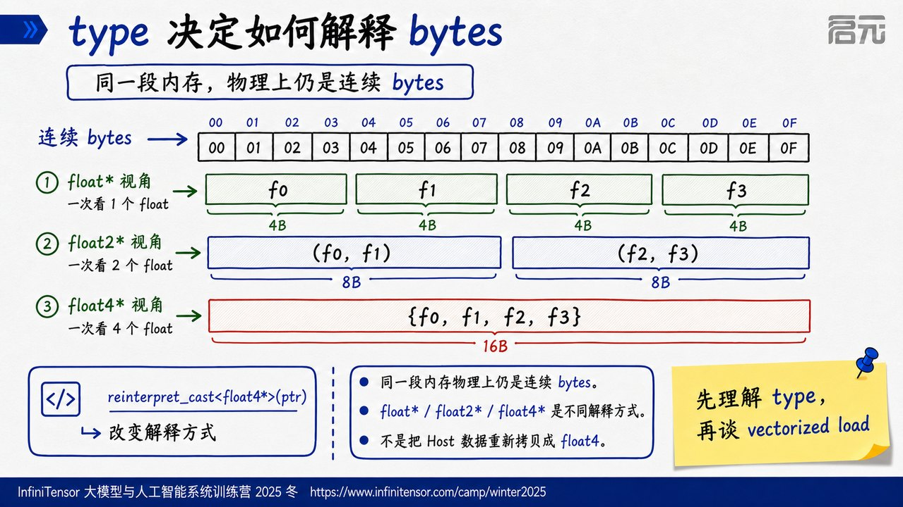
P13 · type 决定如何解释 bytes
向量访问前的 byte 视角
P13 · type 决定如何解释 bytes
可以先说：“这一页先把‘type 决定如何解释 bytes’讲清楚，后面的内容都从这个判断接出去。” 这一页要讲清楚：同一段内存物理上仍是连续 bytes。；float*、float2*、float4* 是不同解释方式。；不是把 Host 数据重新拷贝成 float4。。
讲的时候按这条线推进：讲 float4 前先讲同一段 bytes 可以被不同 type 解释。 这里会碰到的概念有 Host / Device, byte / FLOP, float2 / float4。
讲画面时，画面承担的作用：same memory strip interpreted by different lenses.。 不要让学生只看装饰，要指着图、代码或表格说明它在支撑哪一个判断。
这一页可以配合打开 show-float.html：可以短暂打开 show-float.html 作为 type interpretation 的预告。选择 float1/float2/float4 后点击“执行硬件读取”，让学生看到同一段 4B cell 如何被解释成 1/2/4 个分量。
这里要收住边界：float4 主要是访存组织和分量视图，不是 packed FP32 arithmetic。 收尾时可以说：“这页先解决到这里，下一页我们把问题接到回到 C[i]=A[i]+B[i]。”
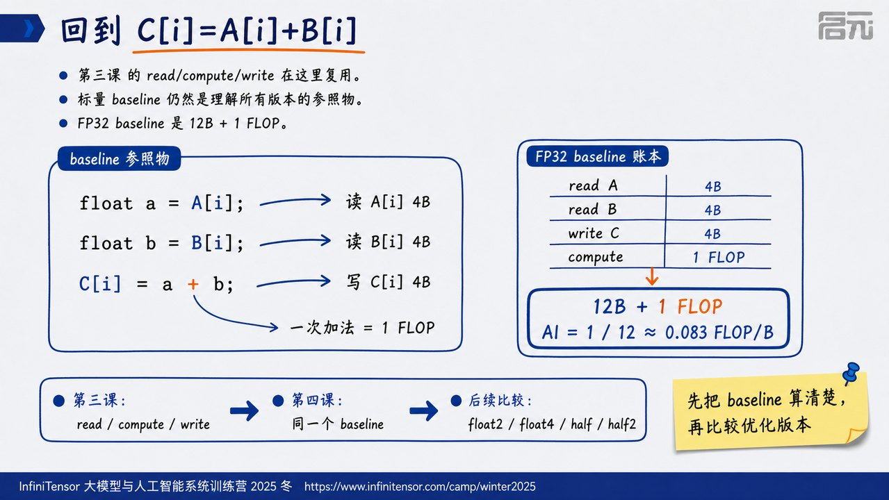
P14 · 回到 `C[i]=A[i]+B[i]`
baseline、float2、float4
P14 · 回到 C[i]=A[i]+B[i]
可以先说：“这一页先把‘回到 C[i]=A[i]+B[i]’讲清楚，后面的内容都从这个判断接出去。” 这一页要讲清楚：第三课 的 read/compute/write 在这里复用。；标量 baseline 仍然是理解所有版本的参照物。；FP32 baseline 是 12B + 1 FLOP。。
讲的时候按这条线推进：读代码时先看每个线程负责几个元素，再看 .x/.y/.z/.w。 先说单位和物理含义，再写公式；公式必须回到 vector add 的读、算、写账本。 这里会碰到的概念有 byte / FLOP。
讲画面时，画面承担的作用：code + ledger.。 不要让学生只看装饰，要指着图、代码或表格说明它在支撑哪一个判断。
这里要收住边界：这是 FP32 baseline 参照，不是优化结论；后面的 float2/float4/half 都要回到这个账本比较。 收尾时可以说：“这页先解决到这里，下一页我们把问题接到baseline kernel：add_float。”
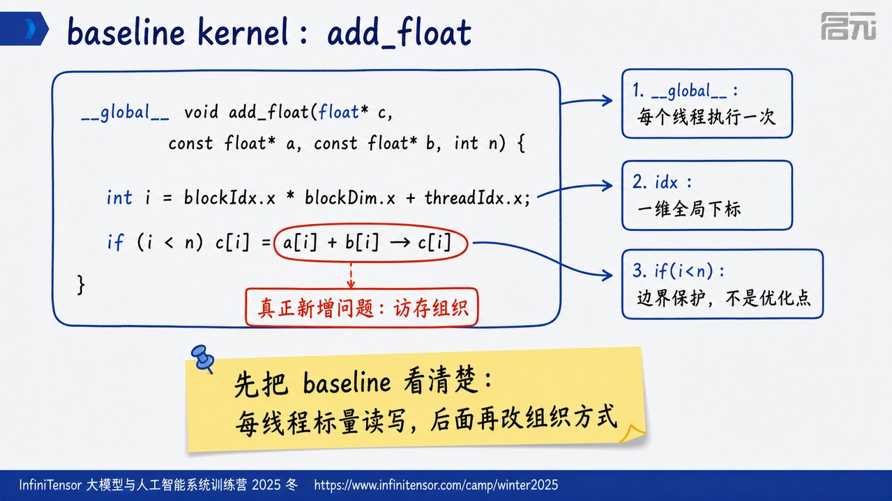
P15 · baseline kernel：`add_float`
baseline、float2、float4
P15 · baseline kernel：add_float
可以先说：“这页不要逐行背代码，我们先看数据在哪、谁在执行、这一行解决哪个动作。” 这一页要讲清楚：展示完整 add_float。；__global__、idx、if(i<n) 只唤醒。；真正新增问题是访存组织。。
讲的时候按这条线推进：读代码时先看每个线程负责几个元素，再看 .x/.y/.z/.w。 先读变量和数据流，再读具体语法；代码页不要逐字念，重点是让导师知道这一页承担哪一个程序动作。 这里会碰到的概念有 kernel。
讲画面时，画面承担的作用：large code card with callouts.。 不要让学生只看装饰，要指着图、代码或表格说明它在支撑哪一个判断。
这里要收住边界：float4 是访存组织和分量视图，不是 packed FP32 arithmetic。 收尾时可以说：“这页先解决到这里，下一页我们把问题接到160 bytes 小练习。”
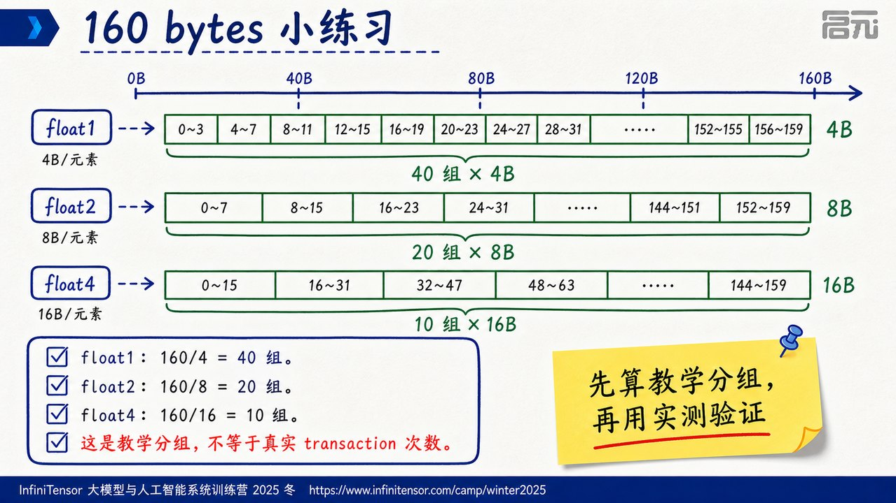
P16 · 160 bytes 小练习
baseline、float2、float4
P16 · 160 bytes 小练习
可以先说：“这一页先把‘160 bytes 小练习’讲清楚，后面的内容都从这个判断接出去。” 这一页要讲清楚：float1: 160/4 = 40 组。；float2: 160/8 = 20 组。；float4: 160/16 = 10 组。；这是教学分组，不等于真实 transaction 次数。。
讲的时候按这条线推进：读代码时先看每个线程负责几个元素，再看 .x/.y/.z/.w。 用画面带学生看地址、边界和 warp/线程维度，避免只凭类型名字判断快慢。 这里会碰到的概念有 byte / FLOP, float2 / float4, memory transaction。
讲画面时，画面承担的作用：160-byte strip grouped three ways.。 不要让学生只看装饰，要指着图、代码或表格说明它在支撑哪一个判断。
这一页可以配合打开 show-float.html：这里不建议把动画当作 160 bytes 完整分组图。它只适合补充说明单组 size：float1 是 4B，float2 是 8B，float4 是 16B；160B 的 40/20/10 组仍以 PPT 练习图为准。
这里要收住边界：float4 主要是访存组织和分量视图，不是 packed FP32 arithmetic。 收尾时可以说：“这页先解决到这里，下一页我们把问题接到每个线程负责一组。”
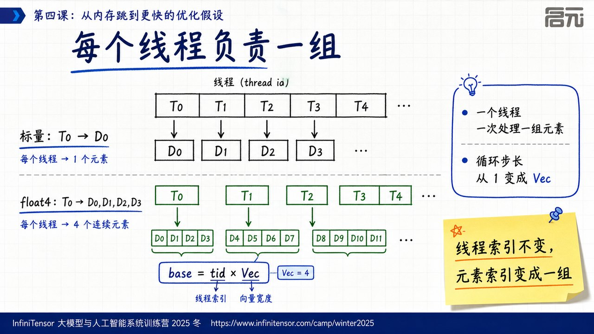
P17 · 每个线程负责一组
baseline、float2、float4
P17 · 每个线程负责一组
可以先说：“这一页先把‘每个线程负责一组’讲清楚，后面的内容都从这个判断接出去。” 这一页要讲清楚：标量：T0 -> D0。；float4：T0 -> D0,D1,D2,D3。；base = tid * Vec。；线程索引和元素索引语义变化。。
讲的时候按这条线推进：读代码时先看每个线程负责几个元素，再看 .x/.y/.z/.w。 这里会碰到的概念有 线程, float2 / float4。
讲画面时，画面承担的作用：thread mapping grid.。 不要让学生只看装饰，要指着图、代码或表格说明它在支撑哪一个判断。
这一页可以配合打开 show-float.html：这里可以用动画说明“一个线程一次读取一组分量”的直觉。它不展示多个线程如何铺满整个数组，所以讲多线程映射时仍以 PPT 的线程/数据格子为主。
这里要收住边界：float4 主要是访存组织和分量视图，不是 packed FP32 arithmetic。 收尾时可以说：“这页先解决到这里，下一页我们把问题接到n / n2 / n4 和尾巴。”
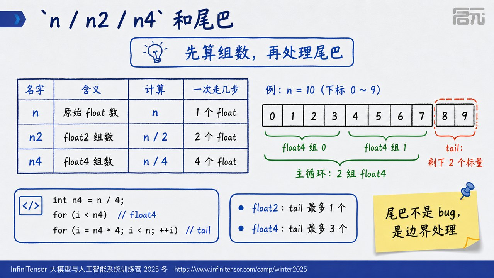
P18 · `n / n2 / n4` 和尾巴
baseline、float2、float4
P18 · n / n2 / n4 和尾巴
可以先说：“这一页先把‘n / n2 / n4 和尾巴’讲清楚，后面的内容都从这个判断接出去。” 这一页要讲清楚：n 是原始 float 元素数。；n2 是 float2 组数。；n4 是 float4 组数。；不能整除时用标量处理尾巴。。
讲的时候按这条线推进：读代码时先看每个线程负责几个元素，再看 .x/.y/.z/.w。 这里会碰到的概念有 float2 / float4。
讲画面时，画面承担的作用：table + tail strip.。 不要让学生只看装饰，要指着图、代码或表格说明它在支撑哪一个判断。
这里要收住边界：float4 主要是访存组织和分量视图，不是 packed FP32 arithmetic。 收尾时可以说：“这页先解决到这里，下一页我们把问题接到CUDA built-in vector types。”
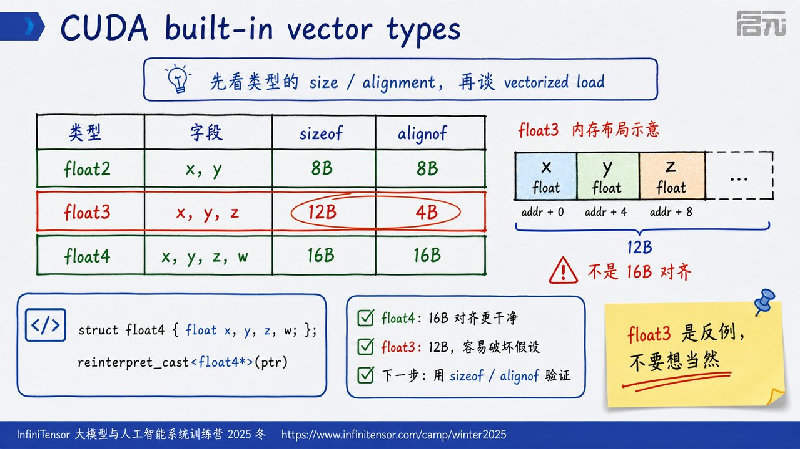
P19 · CUDA built-in vector types
baseline、float2、float4
P19 · CUDA built-in vector types
可以先说：“这一页先把‘CUDA built-in vector types’讲清楚，后面的内容都从这个判断接出去。” 这一页要讲清楚：float2、float3、float4 是 CUDA 内置向量类型。；size/alignment 决定后续解释。；float3 是关键反例。。
讲的时候按这条线推进：读代码时先看每个线程负责几个元素，再看 .x/.y/.z/.w。 用画面带学生看地址、边界和 warp/线程维度，避免只凭类型名字判断快慢。 这里会碰到的概念有 CUDA, float2 / float4, alignment, float3。
讲画面时，画面承担的作用：type table.。 不要让学生只看装饰，要指着图、代码或表格说明它在支撑哪一个判断。
这里要收住边界：float4 主要是访存组织和分量视图，不是 packed FP32 arithmetic。 收尾时可以说：“这页先解决到这里，下一页我们把问题接到.x/.y/.z/.w 和 make_float*。”
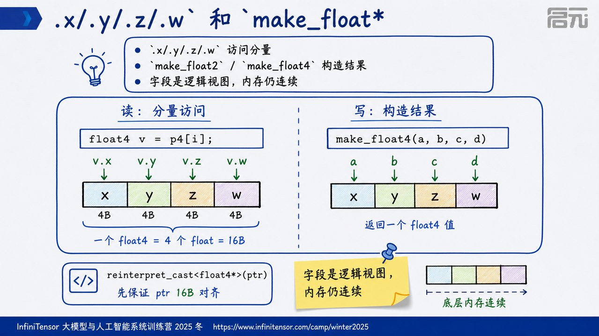
P20 · `.x/.y/.z/.w` 和 `make_float*`
baseline、float2、float4
P20 · .x/.y/.z/.w 和 make_float*
可以先说：“这一页先把‘.x/.y/.z/.w 和 make_float*’讲清楚，后面的内容都从这个判断接出去。” 这一页要讲清楚：向量类型通过 .x/.y/.z/.w 访问分量。；make_float2 / make_float4 构造结果。；字段是逻辑视图，内存仍连续。。
讲的时候按这条线推进：读代码时先看每个线程负责几个元素，再看 .x/.y/.z/.w。 先读变量和数据流，再读具体语法；代码页不要逐字念，重点是让导师知道这一页承担哪一个程序动作。 这里会碰到的概念有 float2 / float4。
讲画面时，画面承担的作用：component card.。 不要让学生只看装饰，要指着图、代码或表格说明它在支撑哪一个判断。
这里要收住边界：float4 主要是访存组织和分量视图，不是 packed FP32 arithmetic。 收尾时可以说：“这页先解决到这里，下一页我们把问题接到float2 显式版本。”
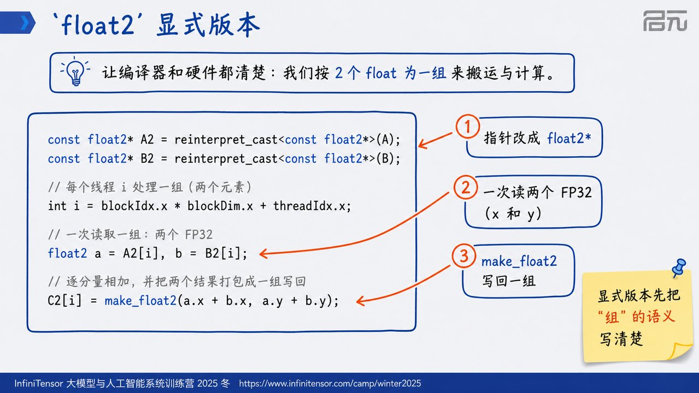
P21 · `float2` 显式版本
baseline、float2、float4
P21 · float2 显式版本
可以先说：“这一页先把‘float2 显式版本’讲清楚，后面的内容都从这个判断接出去。” 这一页要讲清楚：const float2* A/B 用 float2 方式读输入。；float2 a = A[i] 一次读一组两个 FP32。；make_float2 把两个结果组成一组。。
讲的时候按这条线推进：读代码时先看每个线程负责几个元素，再看 .x/.y/.z/.w。 先读变量和数据流，再读具体语法；代码页不要逐字念，重点是让导师知道这一页承担哪一个程序动作。 这里会碰到的概念有 float2 / float4。
讲画面时，画面承担的作用：code card with three callouts.。 不要让学生只看装饰，要指着图、代码或表格说明它在支撑哪一个判断。
这里要收住边界：float4 是访存组织和分量视图，不是 packed FP32 arithmetic。 收尾时可以说：“这页先解决到这里，下一页我们把问题接到float4 显式版本。”
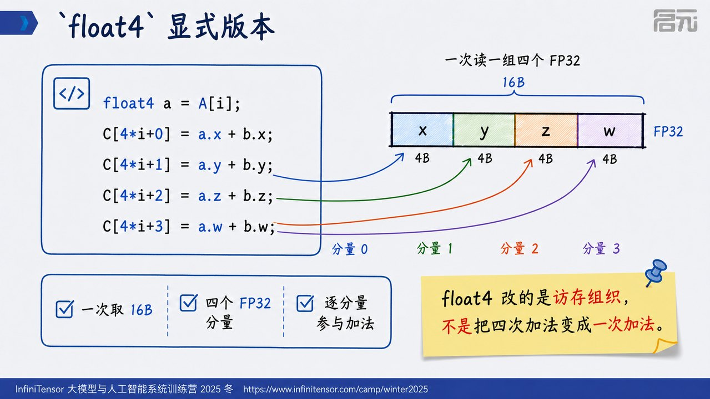
P22 · `float4` 显式版本
baseline、float2、float4
P22 · float4 显式版本
可以先说：“这一页先把‘float4 显式版本’讲清楚，后面的内容都从这个判断接出去。” 这一页要讲清楚：float4 a = A[i] 一次读一组四个 FP32。；a.x/a.y/a.z/a.w 分别参与加法。；仍然是四个 FP32 分量加法。。
讲的时候按这条线推进：读代码时先看每个线程负责几个元素，再看 .x/.y/.z/.w。 这里会碰到的概念有 float2 / float4。
讲画面时，画面承担的作用：code card plus lane labels.。 不要让学生只看装饰，要指着图、代码或表格说明它在支撑哪一个判断。
这里要收住边界：float4 主要是访存组织和分量视图，不是 packed FP32 arithmetic。 收尾时可以说：“这页先解决到这里，下一页我们把问题接到关键边界：float4 不是 packed FP32。”
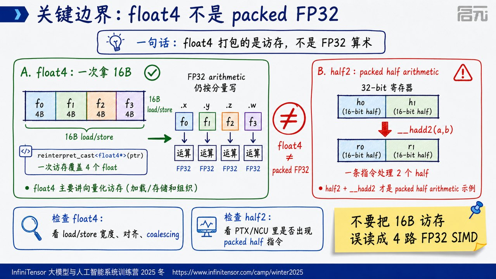
P23 · 关键边界：float4 不是 packed FP32
baseline、float2、float4
P23 · 关键边界：float4 不是 packed FP32
可以先说：“这一页先把‘关键边界：float4 不是 packed FP32’讲清楚，后面的内容都从这个判断接出去。” 这一页要讲清楚：float4 主要讲向量化访存。；普通 FP32 arithmetic 仍按分量写。；后面的 half2 + __hadd2 才是 packed half arithmetic 示例。。
讲的时候按这条线推进：读代码时先看每个线程负责几个元素，再看 .x/.y/.z/.w。 这一页是概念纠偏页，重点是区分 float4 的访存组织和后面 half2/__hadd2 的 packed half arithmetic。 这里会碰到的概念有 float2 / float4, half / FP16, half2 / __hadd2。
讲画面时，画面承担的作用：warning comparison: float4 memory grouping vs half2 packed arithmetic.。 不要让学生只看装饰，要指着图、代码或表格说明它在支撑哪一个判断。
这里要收住边界：__hadd2 才是本节 packed half arithmetic 的明确例子，不要和 float4 混在一起。 收尾时可以说：“这页先解决到这里，下一页我们把问题接到template 为什么出现。”
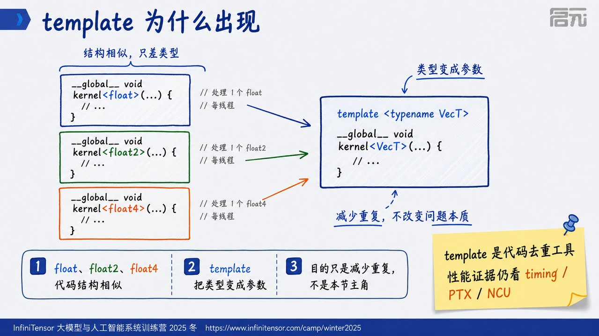
P24 · template 为什么出现
工程化封装和边界检查
P24 · template 为什么出现
可以先问学生：“看到‘template 为什么出现’，你们觉得真正卡住我们的是什么？” 这一页要讲清楚：float、float2、float4 代码结构相似。；template 把类型变成参数。；目的只是减少重复，不是本节主角。。
讲的时候按这条线推进：强调这些不是炫技 C++，而是在服务不同向量宽度的同一条实验线。 这里会碰到的概念有 float2 / float4。
讲画面时，画面承担的作用：repeated code collapsed into template.。 不要让学生只看装饰，要指着图、代码或表格说明它在支撑哪一个判断。
这里要收住边界：float4 主要是访存组织和分量视图，不是 packed FP32 arithmetic。 收尾时可以说：“这页先解决到这里，下一页我们把问题接到__device__ 和 helper function。”
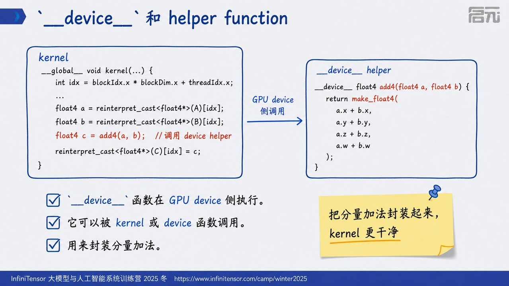
P25 · `__device__` 和 helper function
工程化封装和边界检查
P25 · __device__ 和 helper function
可以先说：“这一页先把‘__device__ 和 helper function’讲清楚，后面的内容都从这个判断接出去。” 这一页要讲清楚：__device__ 函数在 GPU device 侧执行。；它可以被 kernel 或 device 函数调用。；用来封装分量加法。。
讲的时候按这条线推进：强调这些不是炫技 C++，而是在服务不同向量宽度的同一条实验线。 先读变量和数据流，再读具体语法；代码页不要逐字念，重点是让导师知道这一页承担哪一个程序动作。 这里会碰到的概念有 CPU / GPU 分工, kernel。
讲画面时，画面承担的作用：kernel calls device helper.。 不要让学生只看装饰，要指着图、代码或表格说明它在支撑哪一个判断。
这里要收住边界：不满足 alignment 和长度边界时，代码必须处理 tail 或退回安全路径。 收尾时可以说：“这页先解决到这里，下一页我们把问题接到constexpr 和 VecTraits。”
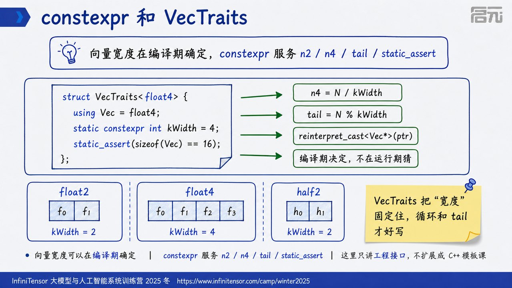
P26 · `constexpr` 和 VecTraits
工程化封装和边界检查
P26 · constexpr 和 VecTraits
可以先说：“这一页先把‘constexpr 和 VecTraits’讲清楚，后面的内容都从这个判断接出去。” 这一页要讲清楚：向量宽度可以在编译期确定。；constexpr 服务 n2/n4/tail/static_assert。；不扩展成 C++ 模板课。。
讲的时候按这条线推进：强调这些不是炫技 C++，而是在服务不同向量宽度的同一条实验线。 这里不需要额外展开新术语，重点是把页面角色讲清楚。
讲画面时，画面承担的作用：compile-time constants card.。 不要让学生只看装饰，要指着图、代码或表格说明它在支撑哪一个判断。
这里要收住边界：不满足 alignment 和长度边界时，代码必须处理 tail 或退回安全路径。 收尾时可以说：“这页先解决到这里，下一页我们把问题接到reinterpret_cast 不是拷贝。”
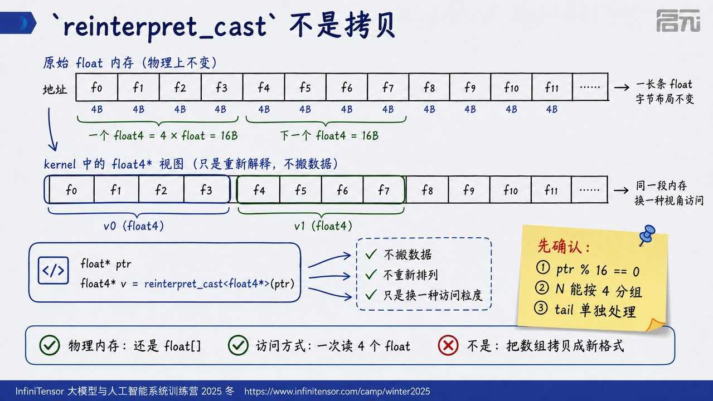
P27 · `reinterpret_cast` 不是拷贝
工程化封装和边界检查
P27 · reinterpret_cast 不是拷贝
可以先说：“这一页先把‘reinterpret_cast 不是拷贝’讲清楚，后面的内容都从这个判断接出去。” 这一页要讲清楚：数据物理上仍是一长条 float。；kernel 里用 float4* 解释同一段内存。；需要满足 alignment 和长度边界。。
讲的时候按这条线推进：强调这些不是炫技 C++，而是在服务不同向量宽度的同一条实验线。 先读变量和数据流，再读具体语法；代码页不要逐字念，重点是让导师知道这一页承担哪一个程序动作。 这里会碰到的概念有 kernel, float2 / float4, alignment。
讲画面时，画面承担的作用：same memory strip with float and float4 overlays.。 不要让学生只看装饰，要指着图、代码或表格说明它在支撑哪一个判断。
这里要收住边界：float4 主要是访存组织和分量视图，不是 packed FP32 arithmetic。 收尾时可以说：“这页先解决到这里，下一页我们把问题接到float4 为什么要看 16B 对齐？。”
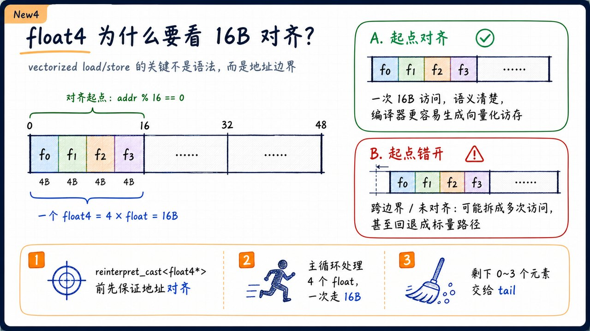
P28 · float4 为什么要看 16B 对齐？
工程化封装和边界检查
P28 · float4 为什么要看 16B 对齐？
可以先问学生：“看到‘float4 为什么要看 16B 对齐？’，你们觉得真正卡住我们的是什么？” 这一页要讲清楚：float4 占 16B，也希望从 16B 边界开始。；用 uintptr_t 检查地址。；不对齐会影响访存形态。。
讲的时候按这条线推进：强调这些不是炫技 C++，而是在服务不同向量宽度的同一条实验线。 这里会碰到的概念有 float2 / float4, alignment。
讲画面时，画面承担的作用：aligned vs misaligned 16-byte blocks.。 不要让学生只看装饰，要指着图、代码或表格说明它在支撑哪一个判断。
这一页可以配合打开 show-float.html：这是最适合打开动画的页面。先选 float4、offset 0，点击“执行硬件读取”看 16B 对齐和 LDG.128；再把 offset 调成 4 或 8 后执行，观察 HUD 变成未对齐/标量降级，用来说明 16B 起点边界。
这里要收住边界：float4 主要是访存组织和分量视图，不是 packed FP32 arithmetic。 收尾时可以说：“这页先解决到这里，下一页我们把问题接到正确性和计时。”
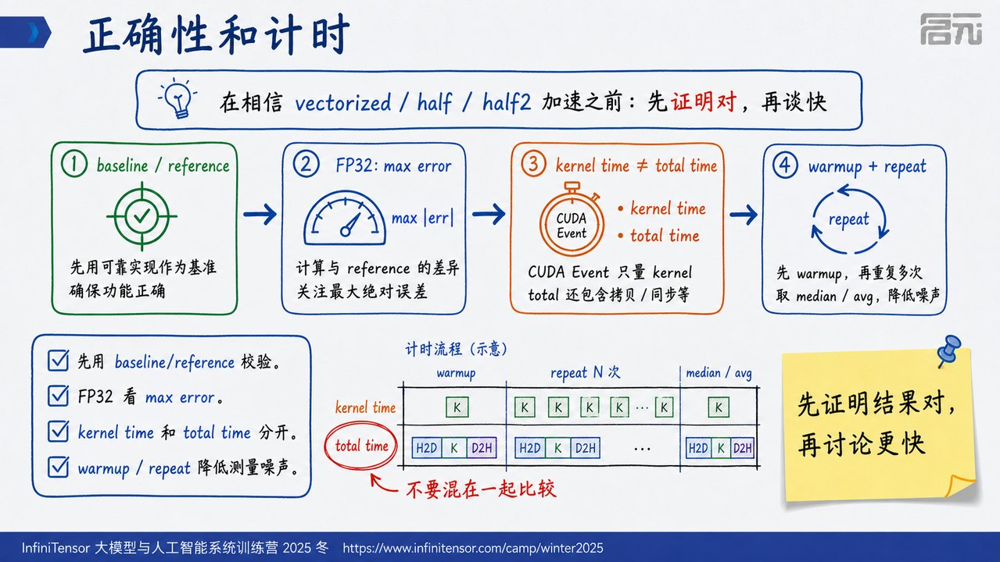
P29 · 正确性和计时
工程化封装和边界检查
P29 · 正确性和计时
可以先说：“这一页先把‘正确性和计时’讲清楚，后面的内容都从这个判断接出去。” 这一页要讲清楚：先用 baseline/reference 校验。；FP32 看 max error。；kernel time 和 total time 分开。；warmup / repeat 降低测量噪声。。
讲的时候按这条线推进：强调这些不是炫技 C++，而是在服务不同向量宽度的同一条实验线。 这里会碰到的概念有 kernel。
讲画面时，画面承担的作用：benchmark checklist.。 不要让学生只看装饰，要指着图、代码或表格说明它在支撑哪一个判断。
这里要收住边界：不满足 alignment 和长度边界时，代码必须处理 tail 或退回安全路径。 收尾时可以说：“这页先解决到这里，下一页我们把问题接到假设 A 的性能观察。”
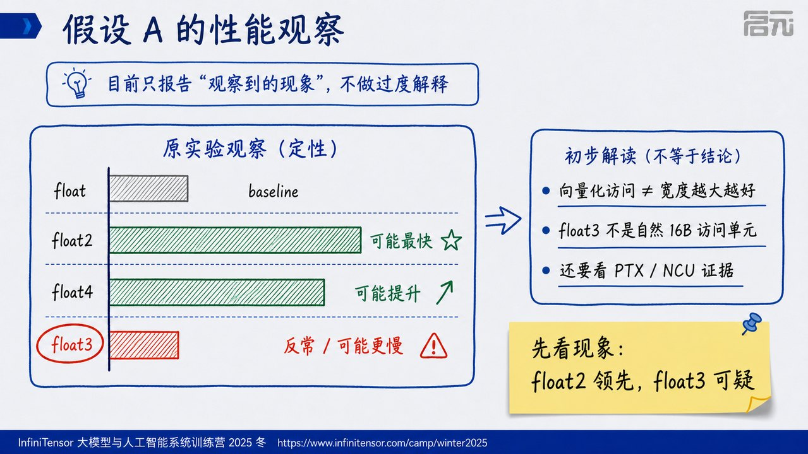
P30 · 假设 A 的性能观察
实验证据与反例
P30 · 假设 A 的性能观察
可以先说：“这一页先把‘假设 A 的性能观察’讲清楚，后面的内容都从这个判断接出去。” 这一页要讲清楚：float2/float4 相比 float 可能提升。；float2 在原实验里可能最快。；float3 可能反常甚至更慢。；下一页解释为什么不能过度概括。。
讲的时候按这条线推进：让学生用问题驱动看证据：为什么 float2/float4 可能快，为什么 float3 可能慢。 用画面带学生看地址、边界和 warp/线程维度，避免只凭类型名字判断快慢。 这里会碰到的概念有 float2 / float4, float3。
讲画面时，这一页应作为原实验结果/证据页来讲：用时间观察支撑 float2/float4/float3 的差异，而不是凭类型名下结论。 不要让学生只看装饰，要指着图、代码或表格说明它在支撑哪一个判断。
这里要收住边界：float4 主要是访存组织和分量视图，不是 packed FP32 arithmetic。 收尾时可以说：“这页先解决到这里，下一页我们把问题接到为什么 AI 对 FP32 任务不变。”
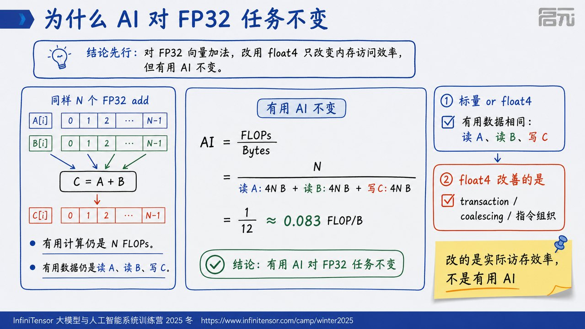
P31 · 为什么 AI 对 FP32 任务不变
实验证据与反例
P31 · 为什么 AI 对 FP32 任务不变
可以先问学生：“看到‘为什么 AI 对 FP32 任务不变’，你们觉得真正卡住我们的是什么？” 这一页要讲清楚：同样 N 个 FP32 add。；有用计算仍是 N FLOPs。；有用数据仍是读 A、读 B、写 C。；改的是实际访存效率，不是有用 AI。。
讲的时候按这条线推进：让学生用问题驱动看证据：为什么 float2/float4 可能快，为什么 float3 可能慢。 先说单位和物理含义，再写公式；公式必须回到 vector add 的读、算、写账本。 这里会碰到的概念有 byte / FLOP, Arithmetic Intensity。
讲画面时，画面承担的作用：equation showing unchanged useful FLOPs/bytes.。 不要让学生只看装饰，要指着图、代码或表格说明它在支撑哪一个判断。
这里要收住边界：这里说的是 useful AI 不变；实际性能变化来自访存形态、transaction、coalescing 和硬件利用率。 收尾时可以说：“这页先解决到这里，下一页我们把问题接到useful bytes / transferred bytes。”
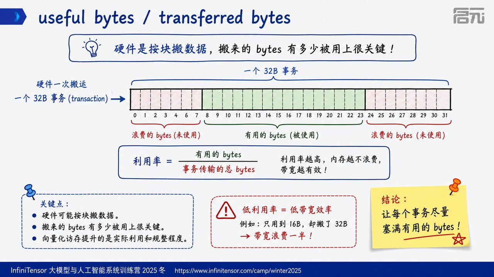
P32 · useful bytes / transferred bytes
实验证据与反例
P32 · useful bytes / transferred bytes
可以先说：“这一页先把‘useful bytes / transferred bytes’讲清楚，后面的内容都从这个判断接出去。” 这一页要讲清楚：硬件可能按块搬数据。；搬来的 bytes 有多少被用上很关键。；向量化访存提高的是实际利用和规整程度。。
讲的时候按这条线推进：让学生用问题驱动看证据：为什么 float2/float4 可能快，为什么 float3 可能慢。 这里会碰到的概念有 byte / FLOP。
讲画面时，画面承担的作用：transaction block with used vs wasted bytes.。 不要让学生只看装饰，要指着图、代码或表格说明它在支撑哪一个判断。
这里要收住边界：vectorization 和 coalescing 相关但不等价；总时间不是唯一证据。 收尾时可以说：“这页先解决到这里，下一页我们把问题接到float4 为什么不总是最快。”
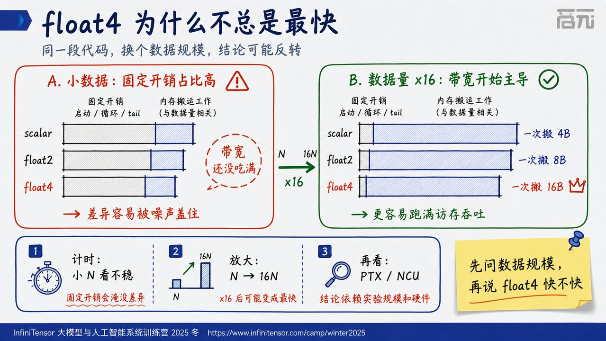
P33 · float4 为什么不总是最快
实验证据与反例
P33 · float4 为什么不总是最快
可以先问学生：“看到‘float4 为什么不总是最快’，你们觉得真正卡住我们的是什么？” 这一页要讲清楚：小数据下固定开销和未饱和带宽会影响。；数据量 x16 后，float4 可能变成最快。；结论要依赖实验规模和硬件。。
讲的时候按这条线推进：让学生用问题驱动看证据：为什么 float2/float4 可能快，为什么 float3 可能慢。 这里会碰到的概念有 float2 / float4。
讲画面时，这一页承接原实验规模变化：小数据和大数据下最优向量宽度可能不同，图的作用是提醒结论依赖规模和硬件。 不要让学生只看装饰，要指着图、代码或表格说明它在支撑哪一个判断。
这里要收住边界：float4 主要是访存组织和分量视图，不是 packed FP32 arithmetic。 收尾时可以说：“这页先解决到这里，下一页我们把问题接到向量化倍数不是越大越好。”
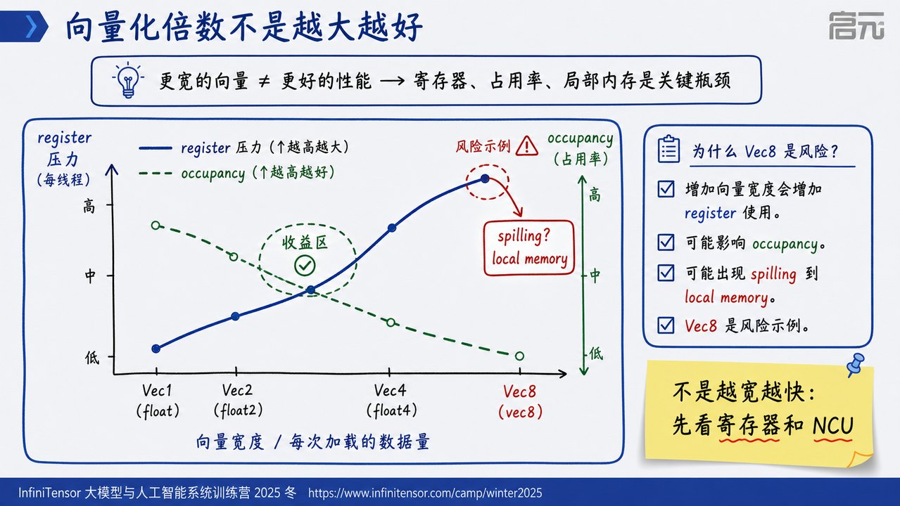
P34 · 向量化倍数不是越大越好
实验证据与反例
P34 · 向量化倍数不是越大越好
可以先说：“这一页先把‘向量化倍数不是越大越好’讲清楚，后面的内容都从这个判断接出去。” 这一页要讲清楚：增加向量宽度会增加 register 使用。；可能影响 occupancy。；可能出现 spilling 到 local memory。；Vec8 是风险示例。。
讲的时候按这条线推进：让学生用问题驱动看证据：为什么 float2/float4 可能快，为什么 float3 可能慢。 这里不需要额外展开新术语，重点是把页面角色讲清楚。
讲画面时，画面承担的作用：vector width vs pressure curve.。 不要让学生只看装饰，要指着图、代码或表格说明它在支撑哪一个判断。
这里要收住边界：vectorization 和 coalescing 相关但不等价；总时间不是唯一证据。 收尾时可以说：“这页先解决到这里，下一页我们把问题接到memory transaction。”
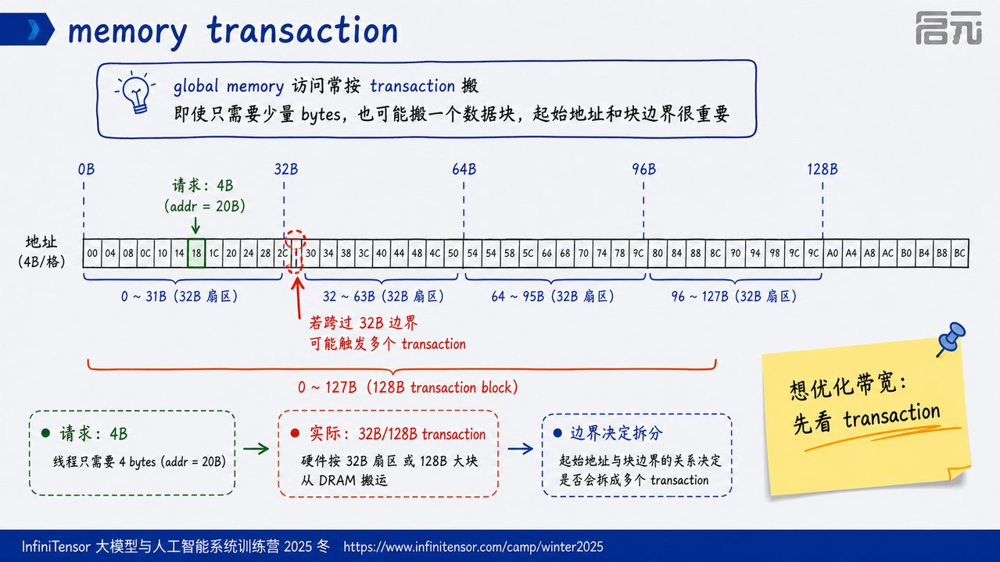
P35 · memory transaction
实验证据与反例
P35 · memory transaction
可以先说：“这一页先把‘memory transaction’讲清楚，后面的内容都从这个判断接出去。” 这一页要讲清楚：global memory 访问常按 transaction 搬。；即使只需要少量 bytes，也可能搬一个数据块。；起始地址和块边界很重要。。
讲的时候按这条线推进：让学生用问题驱动看证据：为什么 float2/float4 可能快，为什么 float3 可能慢。 用画面带学生看地址、边界和 warp/线程维度，避免只凭类型名字判断快慢。 这里会碰到的概念有 byte / FLOP, memory transaction。
讲画面时，画面承担的作用：32B/128B block transaction diagram.。 不要让学生只看装饰，要指着图、代码或表格说明它在支撑哪一个判断。
这里要收住边界：vectorization 和 coalescing 相关但不等价；总时间不是唯一证据。 收尾时可以说：“这页先解决到这里，下一页我们把问题接到coalescing 是 warp 维度。”
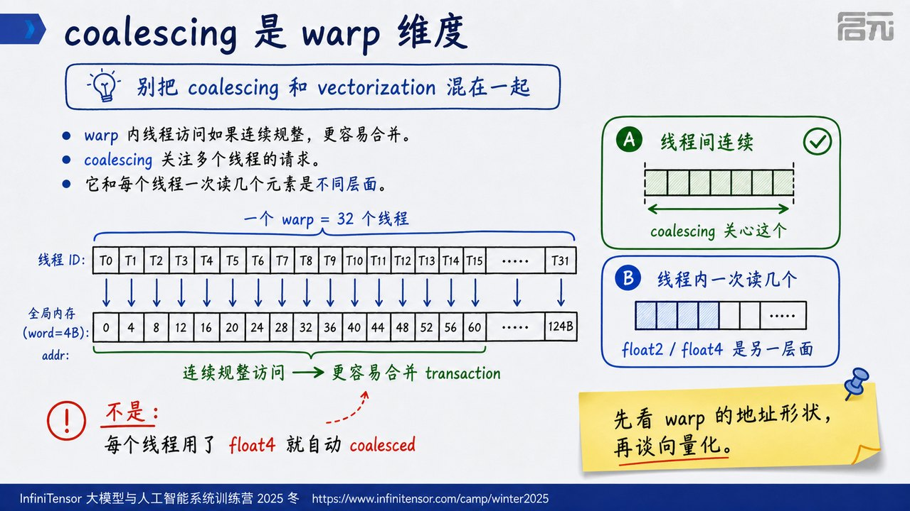
P36 · coalescing 是 warp 维度
实验证据与反例
P36 · coalescing 是 warp 维度
可以先说：“这一页先把‘coalescing 是 warp 维度’讲清楚，后面的内容都从这个判断接出去。” 这一页要讲清楚：warp 内线程访问如果连续规整，更容易合并。；coalescing 关注多个线程的请求。；它和每个线程一次读几个元素是不同层面。。
讲的时候按这条线推进：让学生用问题驱动看证据：为什么 float2/float4 可能快，为什么 float3 可能慢。 用画面带学生看地址、边界和 warp/线程维度，避免只凭类型名字判断快慢。 这里会碰到的概念有 线程, coalescing。
讲画面时，画面承担的作用：32-thread warp accessing contiguous words.。 不要让学生只看装饰，要指着图、代码或表格说明它在支撑哪一个判断。
这里要收住边界：vectorization 和 coalescing 相关但不等价；总时间不是唯一证据。 收尾时可以说：“这页先解决到这里，下一页我们把问题接到vectorization vs coalescing。”
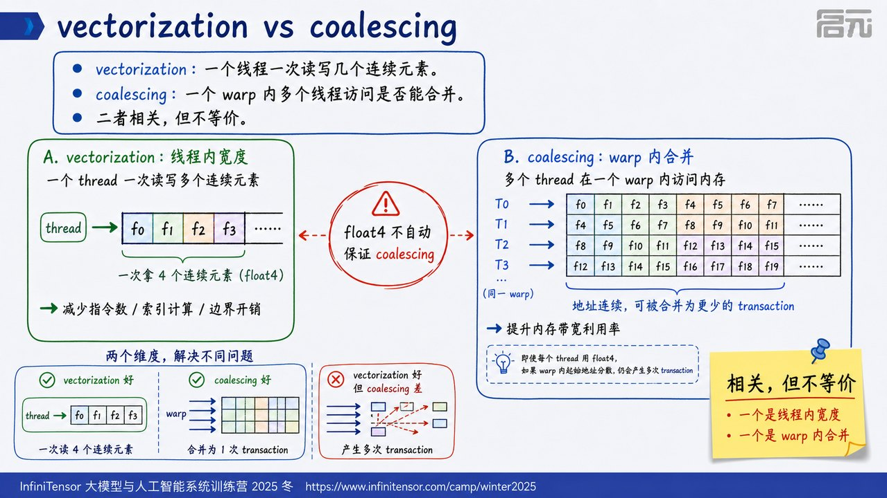
P37 · vectorization vs coalescing
实验证据与反例
P37 · vectorization vs coalescing
可以先说：“这一页先把‘vectorization vs coalescing’讲清楚，后面的内容都从这个判断接出去。” 这一页要讲清楚：vectorization：一个线程一次读写几个连续元素。；coalescing：一个 warp 内多个线程访问是否能合并。；二者相关但不等价。。
讲的时候按这条线推进：让学生用问题驱动看证据：为什么 float2/float4 可能快，为什么 float3 可能慢。 用画面带学生看地址、边界和 warp/线程维度，避免只凭类型名字判断快慢。 这里会碰到的概念有 线程, coalescing。
讲画面时，画面承担的作用：two-axis comparison.。 不要让学生只看装饰，要指着图、代码或表格说明它在支撑哪一个判断。
这里要收住边界：vectorization 和 coalescing 相关但不等价；总时间不是唯一证据。 收尾时可以说：“这页先解决到这里，下一页我们把问题接到float3 为什么反常。”
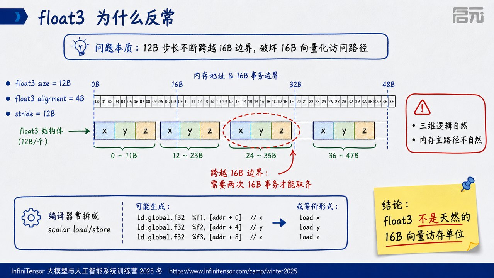
P38 · float3 为什么反常
实验证据与反例
P38 · float3 为什么反常
可以先问学生：“看到‘float3 为什么反常’，你们觉得真正卡住我们的是什么？” 这一页要讲清楚：float3 size = 12B。；float3 alignment = 4B。；三维逻辑自然，内存主路径不自然。；容易拆成多个 scalar load/store。。
讲的时候按这条线推进：让学生用问题驱动看证据：为什么 float2/float4 可能快，为什么 float3 可能慢。 用画面带学生看地址、边界和 warp/线程维度，避免只凭类型名字判断快慢。 这里会碰到的概念有 alignment, float3。
讲画面时，画面承担的作用：12B stride crossing 16B/transaction boundaries.。 不要让学生只看装饰，要指着图、代码或表格说明它在支撑哪一个判断。
这一页可以配合打开 show-float.html：讲 float3 反常时打开动画，把数据类型切到 float3 并点击执行。让学生看 size=12B、alignment=4B、指令流拆成多个 LDG.32 的教学示意，再强调这不是硬件时序模拟。
这里要收住边界：float3 是反例，不要因为三维业务自然就默认它是高效内存形态。 收尾时可以说：“这页先解决到这里，下一页我们把问题接到NCU 看 float3。”
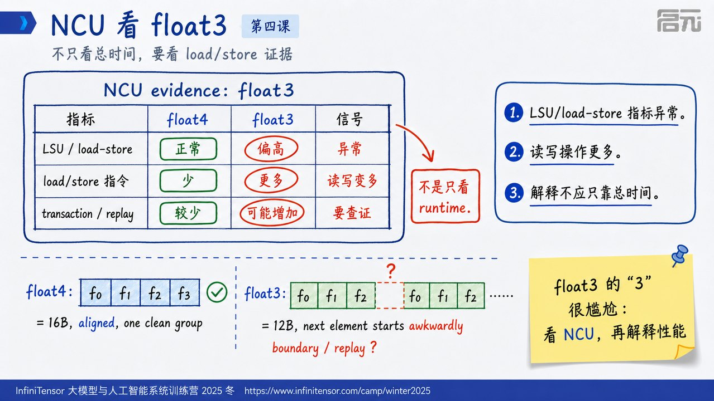
P39 · NCU 看 float3
实验证据与反例
P39 · NCU 看 float3
可以先说：“这一页先把‘NCU 看 float3’讲清楚，后面的内容都从这个判断接出去。” 这一页要讲清楚：LSU/load-store 指标异常。；读写操作更多。；解释不应只靠总时间。。
讲的时候按这条线推进：让学生用问题驱动看证据：为什么 float2/float4 可能快，为什么 float3 可能慢。 先说工具回答什么问题，再说页面上的指标；不要把工具界面讲成按钮教程。 这里会碰到的概念有 NCU, float3。
讲画面时，这一页是 NCU 证据页，图的作用是把 float3 的异常从总时间追到 load/store 指标。 不要让学生只看装饰，要指着图、代码或表格说明它在支撑哪一个判断。
这里要收住边界：NCU 在这里是验证入口，不展开成完整工具课。 收尾时可以说：“这页先解决到这里，下一页我们把问题接到浅看 PTX：float / float2 / float4。”
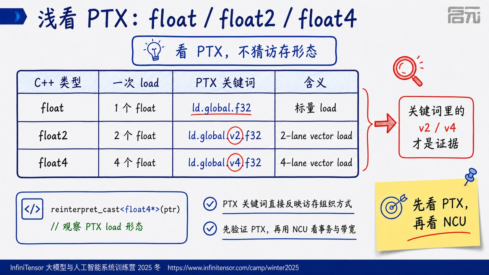
P40 · 浅看 PTX：float / float2 / float4
实验证据与反例
P40 · 浅看 PTX：float / float2 / float4
可以先说：“这页不要逐行背代码，我们先看数据在哪、谁在执行、这一行解决哪个动作。” 这一页要讲清楚：float: ld.global.f32。；float2: ld.global.v2.f32。；float4: ld.global.v4.f32。；PTX 关键词验证访存形态。。
讲的时候按这条线推进：让学生用问题驱动看证据：为什么 float2/float4 可能快，为什么 float3 可能慢。 先读变量和数据流，再读具体语法；代码页不要逐字念，重点是让导师知道这一页承担哪一个程序动作。 这里会碰到的概念有 float2 / float4, PTX。
讲画面时，这一页是 PTX 证据页，用 ld.global.f32/v2.f32/v4.f32 关键词验证访存形态。 不要让学生只看装饰，要指着图、代码或表格说明它在支撑哪一个判断。
这里要收住边界：float4 主要是访存组织和分量视图，不是 packed FP32 arithmetic。 收尾时可以说：“这页先解决到这里，下一页我们把问题接到浅看 PTX：float3。”
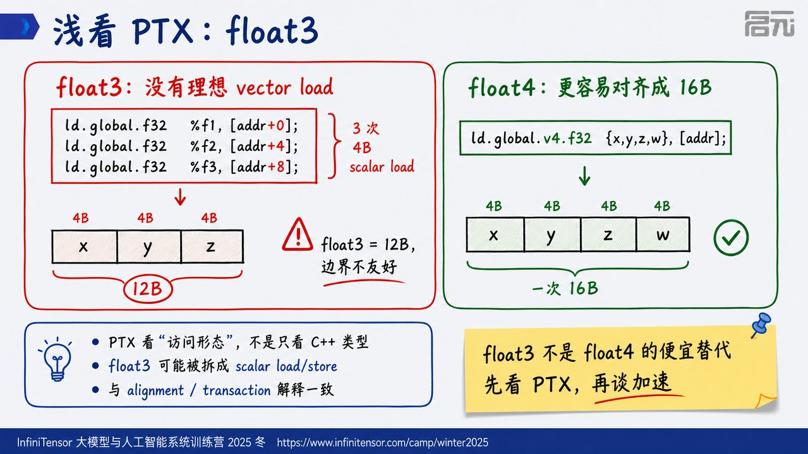
P41 · 浅看 PTX：float3
实验证据与反例
P41 · 浅看 PTX：float3
可以先说：“这页不要逐行背代码，我们先看数据在哪、谁在执行、这一行解决哪个动作。” 这一页要讲清楚：float3 没有形成理想 vector load。；可能表现为多个 scalar load/store。；这与 alignment/transaction 解释一致。。
讲的时候按这条线推进：让学生用问题驱动看证据：为什么 float2/float4 可能快，为什么 float3 可能慢。 先读变量和数据流，再读具体语法；代码页不要逐字念，重点是让导师知道这一页承担哪一个程序动作。 这里会碰到的概念有 alignment, memory transaction, float3, PTX。
讲画面时，这一页是 float3 的 PTX 反例页，图的作用是对比理想 vector load 和被拆散的 scalar load/store。 不要让学生只看装饰，要指着图、代码或表格说明它在支撑哪一个判断。
这里要收住边界：float3 是反例，不要因为三维业务自然就默认它是高效内存形态。 收尾时可以说：“这页先解决到这里，下一页我们把问题接到NCU 应该围绕问题看。”
P42 · NCU 应该围绕问题看
实验证据与反例
P42 · NCU 应该围绕问题看
可以先问学生：“看到‘NCU 应该围绕问题看’，你们觉得真正卡住我们的是什么？” 这一页要讲清楚：看 Memory Workload。；看 Speed of Light。；看 LSU/load-store。；看 register/occupancy/spilling。；每次只围绕一个问题看证据。。
讲的时候按这条线推进：让学生用问题驱动看证据：为什么 float2/float4 可能快，为什么 float3 可能慢。 先说工具回答什么问题，再说页面上的指标；不要把工具界面讲成按钮教程。 这里会碰到的概念有 NCU。
讲画面时，画面承担的作用：tool checklist.。 不要让学生只看装饰，要指着图、代码或表格说明它在支撑哪一个判断。
这里要收住边界：NCU 在这里是验证入口，不展开成完整工具课。 收尾时可以说：“这页先解决到这里，下一页我们把问题接到进入假设 B：half 降低 Q。”
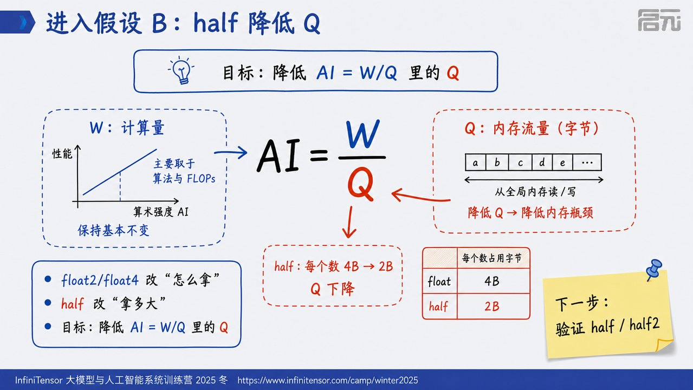
P43 · 进入假设 B：half 降低 Q
half 降低 Q
P43 · 进入假设 B：half 降低 Q
可以先说：“这一页先把‘进入假设 B：half 降低 Q’讲清楚，后面的内容都从这个判断接出去。” 这一页要讲清楚：float2/float4 改“怎么拿”。；half 改“拿多大”。；目标是降低 AI = W/Q 里的 Q。。
讲的时候按这条线推进：先算 12B 到 6B，再讲 half API、舍入和验证阈值。 把性能和数值边界一起讲：数据量变小是一条线，精度、转换和硬件路径是另一条线。 这里会碰到的概念有 Arithmetic Intensity, float2 / float4, half / FP16。
讲画面时，画面承担的作用：section divider with W/Q.。 不要让学生只看装饰，要指着图、代码或表格说明它在支撑哪一个判断。
这里要收住边界：float2/float4 改的是“怎么拿”，half 改的是“拿多大”；不要把 A 和 B 两条优化线混成同一个动作。 收尾时可以说：“这页先解决到这里，下一页我们把问题接到FP32 vs FP16 数据量。”
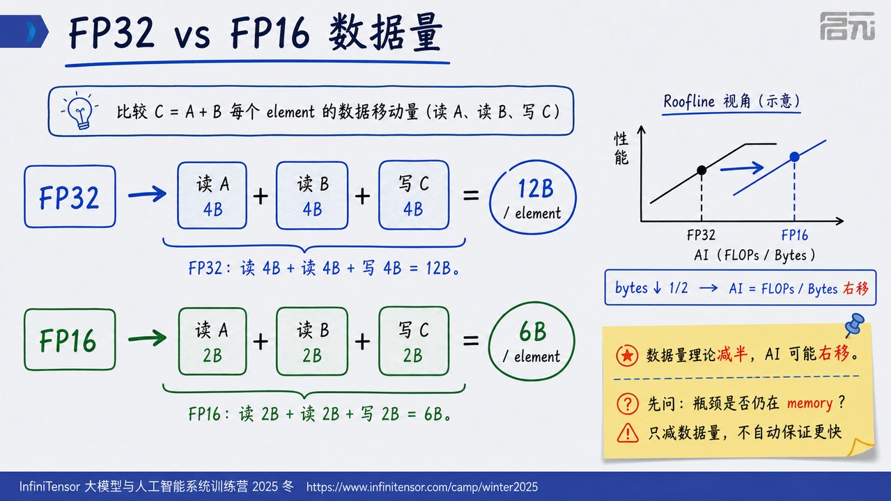
P44 · FP32 vs FP16 数据量
half 降低 Q
P44 · FP32 vs FP16 数据量
可以先说：“这一页先把‘FP32 vs FP16 数据量’讲清楚，后面的内容都从这个判断接出去。” 这一页要讲清楚：FP32：读 4B + 读 4B + 写 4B = 12B。；FP16：读 2B + 读 2B + 写 2B = 6B。；数据量理论减半，AI 可能右移。。
讲的时候按这条线推进：先算 12B 到 6B，再讲 half API、舍入和验证阈值。 把性能和数值边界一起讲：数据量变小是一条线，精度、转换和硬件路径是另一条线。 这里会碰到的概念有 Arithmetic Intensity, half / FP16。
讲画面时，画面承担的作用：formula comparison.。 不要让学生只看装饰，要指着图、代码或表格说明它在支撑哪一个判断。
这里要收住边界：数据量理论减半不等于运行时间必然减半；还要看转换、cache、固定开销和硬件路径。 收尾时可以说：“这页先解决到这里，下一页我们把问题接到FP16 结构感。”
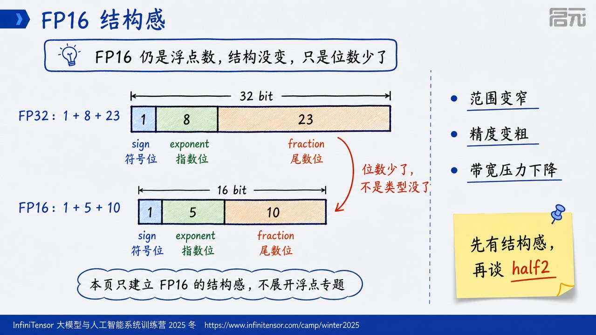
P45 · FP16 结构感
half 降低 Q
P45 · FP16 结构感
可以先说：“这一页先把‘FP16 结构感’讲清楚，后面的内容都从这个判断接出去。” 这一页要讲清楚：FP16 仍是浮点数。；sign / exponent / fraction 三段结构。；位数减少带来范围和精度变化。；不展开成浮点数专题。。
讲的时候按这条线推进：先算 12B 到 6B，再讲 half API、舍入和验证阈值。 把性能和数值边界一起讲：数据量变小是一条线，精度、转换和硬件路径是另一条线。 这里会碰到的概念有 half / FP16。
讲画面时，画面承担的作用：bit fields for FP32 vs FP16.。 不要让学生只看装饰，要指着图、代码或表格说明它在支撑哪一个判断。
这里要收住边界：half 会改变数值精度和校验阈值，不能只看速度。 收尾时可以说：“这页先解决到这里，下一页我们把问题接到CUDA half API。”
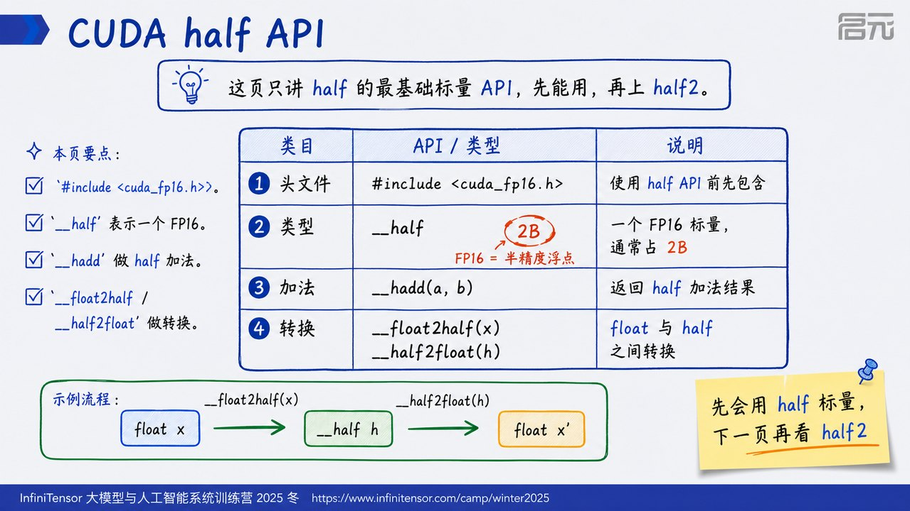
P46 · CUDA half API
half 降低 Q
P46 · CUDA half API
可以先说：“这一页先把‘CUDA half API’讲清楚，后面的内容都从这个判断接出去。” 这一页要讲清楚：#include <cuda_fp16.h>。；__half 表示一个 FP16。；__hadd 做 half 加法。；__float2half / __half2float 做转换。。
讲的时候按这条线推进：先算 12B 到 6B，再讲 half API、舍入和验证阈值。 把性能和数值边界一起讲：数据量变小是一条线，精度、转换和硬件路径是另一条线。 这里会碰到的概念有 CUDA, float2 / float4, half / FP16, half2 / __hadd2。
讲画面时，画面承担的作用：API table.。 不要让学生只看装饰，要指着图、代码或表格说明它在支撑哪一个判断。
这里要收住边界：__hadd2 才是本节 packed half arithmetic 的明确例子，不要和 float4 混在一起。 收尾时可以说：“这页先解决到这里，下一页我们把问题接到舍入模式和数值边界。”
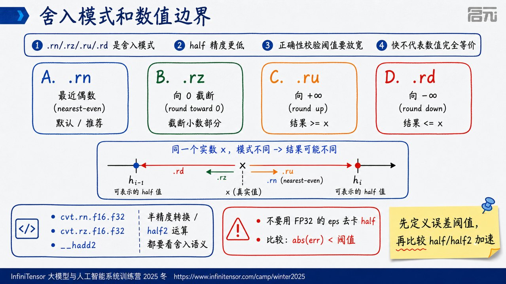
P47 · 舍入模式和数值边界
half 降低 Q
P47 · 舍入模式和数值边界
可以先说：“这一页先把‘舍入模式和数值边界’讲清楚，后面的内容都从这个判断接出去。” 这一页要讲清楚：.rn/.rz/.ru/.rd 是舍入模式。；half 精度更低。；正确性校验阈值要放宽。；快不代表数值完全等价。。
讲的时候按这条线推进：先算 12B 到 6B，再讲 half API、舍入和验证阈值。 把性能和数值边界一起讲：数据量变小是一条线，精度、转换和硬件路径是另一条线。 这里会碰到的概念有 half / FP16。
讲画面时，画面承担的作用：rounding mode cards.。 不要让学生只看装饰，要指着图、代码或表格说明它在支撑哪一个判断。
这里要收住边界：half 会改变数值精度和校验阈值，不能只看速度。 收尾时可以说：“这页先解决到这里，下一页我们把问题接到half 性能为什么不一定 2x。”
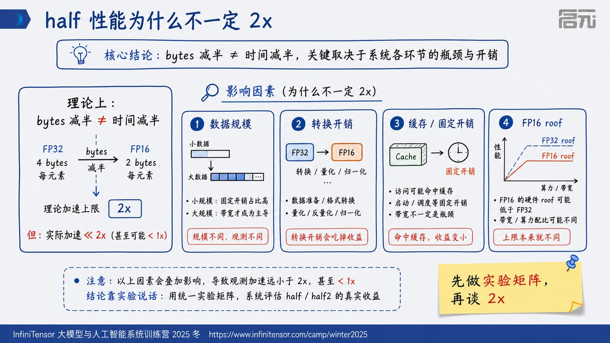
P48 · half 性能为什么不一定 2x
half 降低 Q
P48 · half 性能为什么不一定 2x
可以先问学生：“看到‘half 性能为什么不一定 2x’，你们觉得真正卡住我们的是什么？” 这一页要讲清楚：数据规模会影响观测。；转换开销、缓存、固定开销会影响。；FP16 的硬件 roof 可能和 FP32 不同。；不展开 Tensor Core。。
讲的时候按这条线推进：先算 12B 到 6B，再讲 half API、舍入和验证阈值。 把性能和数值边界一起讲：数据量变小是一条线，精度、转换和硬件路径是另一条线。 这里会碰到的概念有 核心, half / FP16。
讲画面时，这一页应作为 half 性能证据页来讲：数据量减半只是理论方向，实际速度还受转换、规模、缓存和硬件路径影响。 不要让学生只看装饰，要指着图、代码或表格说明它在支撑哪一个判断。
这里要收住边界：half 会改变数值精度和校验阈值，不能只看速度。 收尾时可以说：“这页先解决到这里，下一页我们把问题接到half2 是什么。”
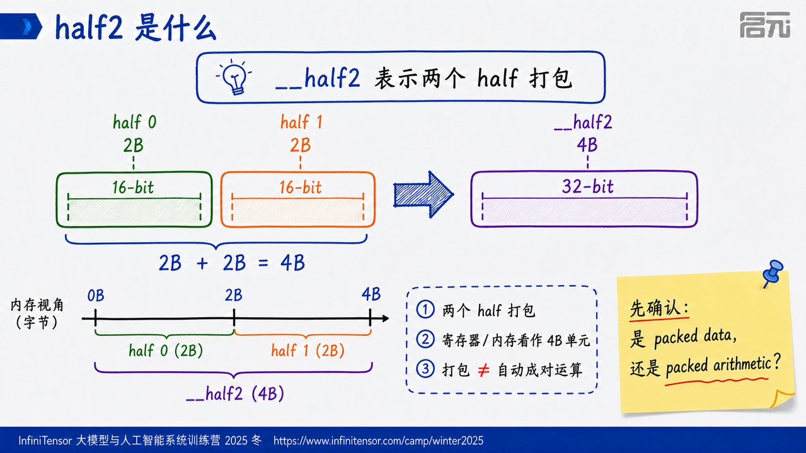
P49 · half2 是什么
half2 与总结
P49 · half2 是什么
可以先说：“这一页先把‘half2 是什么’讲清楚，后面的内容都从这个判断接出去。” 这一页要讲清楚：__half2 表示两个 half 打包。；一个 half 是 2B。；两个 half 合起来是 4B。；打包类型不自动等于 packed arithmetic。。
讲的时候按这条线推进：特别对比 float4 和 __hadd2：一个主要是访存组织，一个直接表达 packed half arithmetic。 把 half2 的打包表达和 __hadd2 的 packed arithmetic 讲清楚，不要和 float2/float4 的访存组织混在一起。 这里会碰到的概念有 half / FP16, half2 / __hadd2。
讲画面时，画面承担的作用：half + half -> half2 packing diagram.。 不要让学生只看装饰，要指着图、代码或表格说明它在支撑哪一个判断。
这里要收住边界：__hadd2 才是本节 packed half arithmetic 的明确例子，不要和 float4 混在一起。 收尾时可以说：“这页先解决到这里，下一页我们把问题接到manual half2 vs __hadd2。”
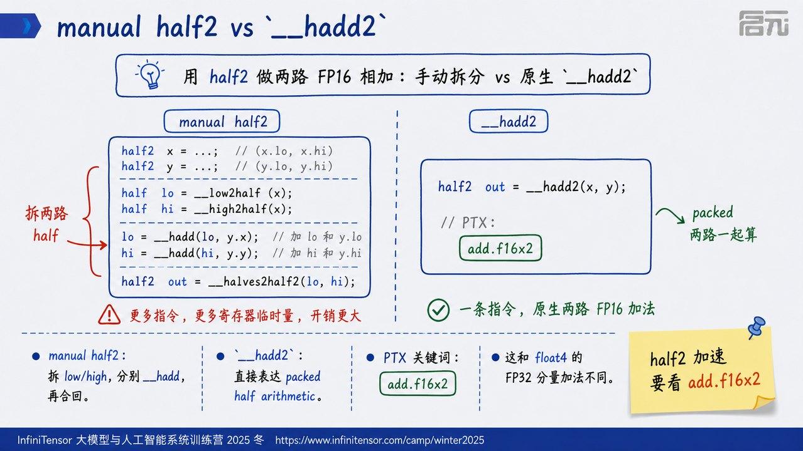
P50 · manual half2 vs `__hadd2`
half2 与总结
P50 · manual half2 vs __hadd2
可以先说：“这一页先把‘manual half2 vs __hadd2’讲清楚，后面的内容都从这个判断接出去。” 这一页要讲清楚：manual half2：拆 low/high，分别 __hadd，再合回。；__hadd2：直接表达 packed half arithmetic。；PTX 关键词：add.f16x2。；这和 float4 的 FP32 分量加法不同。。
讲的时候按这条线推进：特别对比 float4 和 __hadd2：一个主要是访存组织，一个直接表达 packed half arithmetic。 把 half2 的打包表达和 __hadd2 的 packed arithmetic 讲清楚，不要和 float2/float4 的访存组织混在一起。 这里会碰到的概念有 float2 / float4, PTX, half / FP16, half2 / __hadd2。
讲画面时，画面承担的作用：two code panels side by side.。 不要让学生只看装饰，要指着图、代码或表格说明它在支撑哪一个判断。
这里要收住边界：__hadd2 才是本节 packed half arithmetic 的明确例子，不要和 float4 混在一起。 收尾时可以说：“这页先解决到这里，下一页我们把问题接到实验矩阵和验证顺序。”
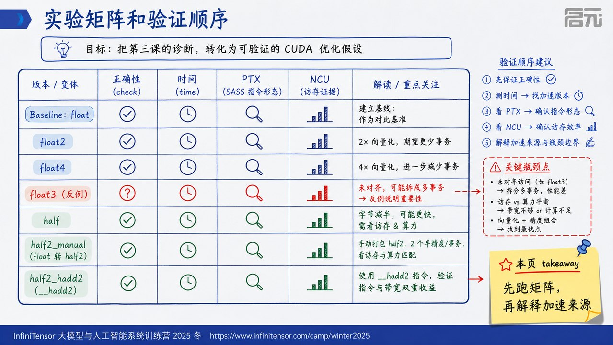
P51 · 实验矩阵和验证顺序
half2 与总结
P51 · 实验矩阵和验证顺序
可以先说：“这一页先把‘实验矩阵和验证顺序’讲清楚，后面的内容都从这个判断接出去。” 这一页要讲清楚：float baseline。；float2、float4、float3。；half、half2_manual、half2_hadd2。；每个版本看 time、PTX、NCU。。
讲的时候按这条线推进：特别对比 float4 和 __hadd2：一个主要是访存组织，一个直接表达 packed half arithmetic。 先说工具回答什么问题，再说页面上的指标；不要把工具界面讲成按钮教程。 这里会碰到的概念有 NCU, float2 / float4, float3, PTX, half / FP16。
讲画面时，画面承担的作用：experiment matrix table.。 不要让学生只看装饰，要指着图、代码或表格说明它在支撑哪一个判断。
这里要收住边界：NCU 在这里是验证入口，不展开成完整工具课。 收尾时可以说：“这页先解决到这里，下一页我们把问题接到总结和思考题。”
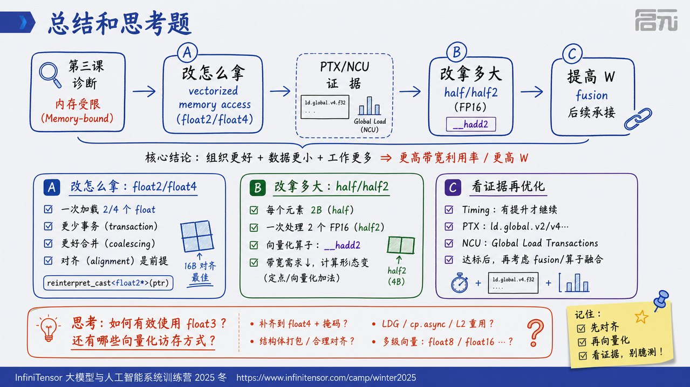
P52 · 总结和思考题
half2 与总结
P52 · 总结和思考题
可以先说：“我们把今天真正要带走的话压成几句，后面的课就接在这些判断上。” 这一页要讲清楚：A：改怎么拿，float2/float4。；B：改拿多大，half/half2。；C：提高 W，fusion 后续承接。；思考：如何有效使用 float3？还有哪些向量化访存方式？。
讲的时候按这条线推进：特别对比 float4 和 __hadd2：一个主要是访存组织，一个直接表达 packed half arithmetic。 用画面带学生看地址、边界和 warp/线程维度，避免只凭类型名字判断快慢。 这里会碰到的概念有 float2 / float4, float3, half / FP16, half2 / __hadd2。
讲画面时，画面承担的作用：closing summary + homework cards.。 不要让学生只看装饰，要指着图、代码或表格说明它在支撑哪一个判断。
这里要收住边界：float4 主要是访存组织和分量视图，不是 packed FP32 arithmetic。 收尾时可以说：“这一节到这里先停住，后面的问题就是把今天的判断继续落到下一节或后续练习里。”
本 HTML 大纲按发布 PPT 逐页对照整理；预览图来自当前发布 PPT 或 Lesson 03/04 的已生成 origin_image。它用于向导师说明每页讲什么和为什么这样设计，不替代课堂逐字稿。